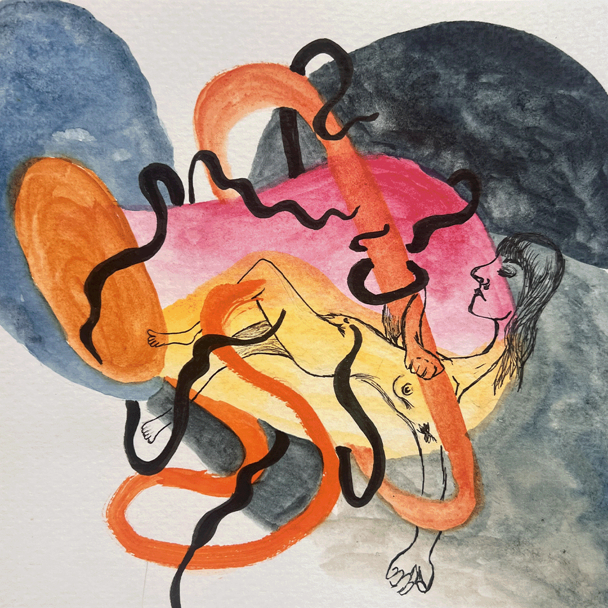

Lexi Alvarado: Turbulent Fields, Quiet Spaces
Join nonprofit NEW Gallery for the opening reception of Lexi Alvarado’s Turbulent Fields, Quiet Spaces.
Turbulent Fields, Quiet Spaces explores the emotional landscape of healing after heartbreak. Through layered color, texture, and gesture, the paintings trace a journey from rupture toward renewal. Each work holds fragments of grief, memory, and reflection, metabolizing turbulence into artwork.
Not solely about heartbreak, the exhibition also reflects on transformation and identity. Alvarado’s paintings hold vulnerability alongside resilience, tenderness alongside strength, and the optimistic possibility of beginning again.